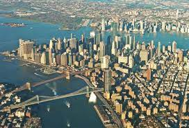

Нью-Йорк включает пять боро (районов), расположенных в месте впадения реки Гудзон в Атлантический океан.
Главные достопримечательности Нью-Йорка – многочисленные небоскребы, в том числе Эмпайр-стейт-билдинг, и огромный Центральный парк.
На залитой неоновыми огнями площади Таймс-сквер расположен театр "Бродвей".
Нью-Йорк включает пять административных округов (районов, боро): Бронкс, Бруклин, Куинс, Манхэттен и Статен-Айленд. Основные достопримечательности расположены в боро Манхэттен. Среди них: исторические небоскрёбы (Эмпайр-стейт-билдинг, Крайслер-билдинг), Рокфеллеровский центр, Вулворт-билдинг, художественный Метрополитен-музей, Метрополитен-опера, Карнеги-холл, Музей Соломона Гуггенхейма (живопись), Американский музей естественной истории (скелеты динозавров и планетарий), отель «Плаза», отель «Уолдорф-Астория», отель «Челси», штаб-квартира ООН, Гарлем.
Нью-Йорк — важный мировой финансовый, политический, экономический и культурный центр.
В начале Войны за независимость современная территория города являлась ареной важных сражений. В результате Бруклинской битвы в Бруклине начался большой пожар, в котором сгорела большая часть города. Нью-Йорк перешёл под контроль Великобритании, пока американцы вновь не завладели им в 1783 году. Этот день, получивший название «День Эвакуации», впоследствии отмечался в Нью-Йорке на протяжении многих лет.
В течение XIX века население города стремительно росло благодаря притоку большого количества иммигрантов. В 1811 году был разработан дальновидный генеральный план развития города, по которому сеть улиц была расширена, охватив весь Манхэттен. К 1835 году Нью-Йорк обогнал по количеству населения Филадельфию, став самым большим городом Соединённых Штатов. Тем не менее город продолжал оставаться весьма провинциальным, особенно с точки зрения жителей Европы. Чарльз Диккенс, посетивший США в 1842 году, оставил о Нью-Йорке следующее воспоминание
Во время Гражданской войны прочные торговые связи города с Югом, а также его растущее иммигрантское население привели к расколу между сторонниками Союза и сторонниками Конфедерации, который достиг высшего накала в мятежах из-за призыва — самых крупных гражданских беспорядках в американской истории. После войны темп иммиграции из Европы возрос ещё сильнее, и Нью-Йорк превратился в первую остановку для миллионов людей, прибывающих в Соединённые Штаты в поисках новой, лучшей жизни. В 1898 году город Нью-Йорк приобрёл сегодняшние границы: прежде он состоял из Манхэттена и Бронкса, присоединённого к городу с севера, от округа Уэстчестер (западный Бронкс в 1874 году, остальная территория — в 1895 году). В 1898 году, согласно новому законопроекту, была создана новая муниципальная единица, первоначально названная Большой Нью-Йорк. Новый город был разделён на пять районов (боро). Районы Манхэттен и Бронкс расширили свои границы и отныне покрывали территорию первоначального города и всю остальную часть округа Нью-Йорк. Район Бруклин был образован из города Бруклин и нескольких муниципалитетов в восточной части округа Кингс. Район Куинс был основан в западной части округа Куинс и покрывал несколько небольших городков и посёлков, включая Лонг-Айленд-Сити, Асторию и Флашинг. Район Статен-Айленд полностью вместил округ Ричмонд. Все бывшие городские органы управления внутри этих районов были упразднены. Год спустя территория округа Куинс, которая не попала в пределы района Куинс, была выделена в округ Нассо, который не входит в состав города Нью-Йорк. В 1914 году законодательные власти штата создали округ Бронкс, а округ Нью-Йорк сократился до размеров одного Манхэттена. Сегодня границы пяти районов Нью-Йорка в основном совпадают с границами соответствующих округов.
Манхэттен 